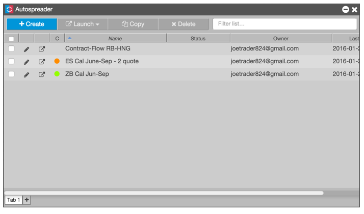

Use Autospreader® to create and trade your own synthetic calendar, inter-product, or inter-exchange spreads. You can define the legs of the spread, then preview the implied market for the spread based on the outright legs. When entering orders in the implied market, Autospreader works the legs to achieve the spread setting parameters.
The Autospreader widget can be opened by:
Autospreader constructs a synthetic spread market using settings established during the spread creation process. Synthetic spread orders are executed on the Autospreader Server, which is colocated with the exchange matching engine.
When you submit a synthetic spread order, Autospreader submits a quoting order in the designated quoting leg or legs based on the current bid or ask in the hedge leg and the available liquidity. Autospreader calculates a price level at which to place the quoting order where adequate liquidity is available to fill the order at the desired spread price. As the best bid or ask changes in the hedge leg, Autospreader automatically replaces the quote order.
When you open the Autospreader widget from the Widgets menu, it displays the list of spreads you've created and those that have been shared with you. You can launch, create, edit, and manage (copy, share, delete) all of your spreads from this widget.

The Autospreader widget provides the following functions: